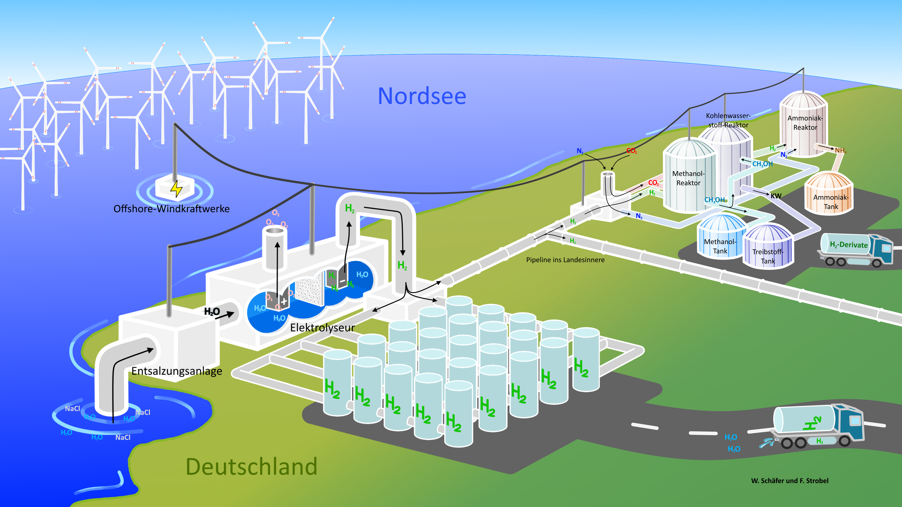

ist eine Kampagne des Kurfürst-Balduin-Gymnasium Münstermaifeld. Unser Ziel ist Erdgas, Erdöl und Kohle durch Grünen Wasserstoff zu ersetzen. Denn im Grunde wissen es alle: Die Erderhitzung muss gestoppt werden! Sonst können wir auf unserer Erde kein menschenwürdiges Leben mehr führen. Und auch dies wissen längst alle: Für den Stopp der Erderhitzung muss vollkommen auf fossile Energieträger verzichtet werden. Doch es sind höchstens 50% der fossilen Energieträger durch rein elektrische Energie ersetzbar. Die Schwerindustrie und weitere energieintensive Branchen brauchen Alternativen, und die bietet Grüner Wasserstoff. Deshalb brauchen wir den sofortigen Einstieg in den Grünen Wasserstoff, um künftigen Wohlstand überhaupt zu ermöglichen und das Wohlergehen der Menschheit zu sichern. Dringlich benötigt werden Gigafabriken, die den Grünen Wasserstoff in riesigen Mengen produzieren.

Diese Gigafabriken sollen ein globales und vernetztes Energienetzwerk bilden, das im Stande ist, flexibel und durch verschiedenste Transportmethoden fossile Energieträger abzulösen. Dazu ist Wasserstoff ein hervorragender Speicher, welcher überall realisierbar und mengenmäßig als kompletter Ersatz für die fossilen Energieträger genutzt werden kann. Zudem kann der Grüne Wasserstoff und seine Derivate alle Anwendungen der fossilen Energieträger vollständig ersetzen. Durch die weltweite Produktion in Gigafabriken wird der Grüne Wasserstoff zu einem sehr günstigem Massenprodukt, günstiger als die fossilen Energieträger.
Unsere Forderung an Industrie, Politik und Gesellschaft:
Fossile Energieträger sind Klimakiller! Lasst uns eine Wirtschaft umsetzen, in der über grüne elektrische Energie hinaus in Gigafabriken konstengünstig Grüner Wasserstoff in Massen produziert wird. Und das innerhalb der nächsten 10 Jahre, um das Leben auf unserem Planeten zu beschützen! Lasst uns jetzt Bedingungen schaffen, unter denen der Grüne Wasserstoff aufblühen kann und riesige Mengen keine Illusion, sondern konstengünstige Realität sind!